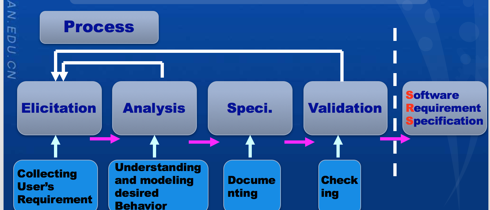
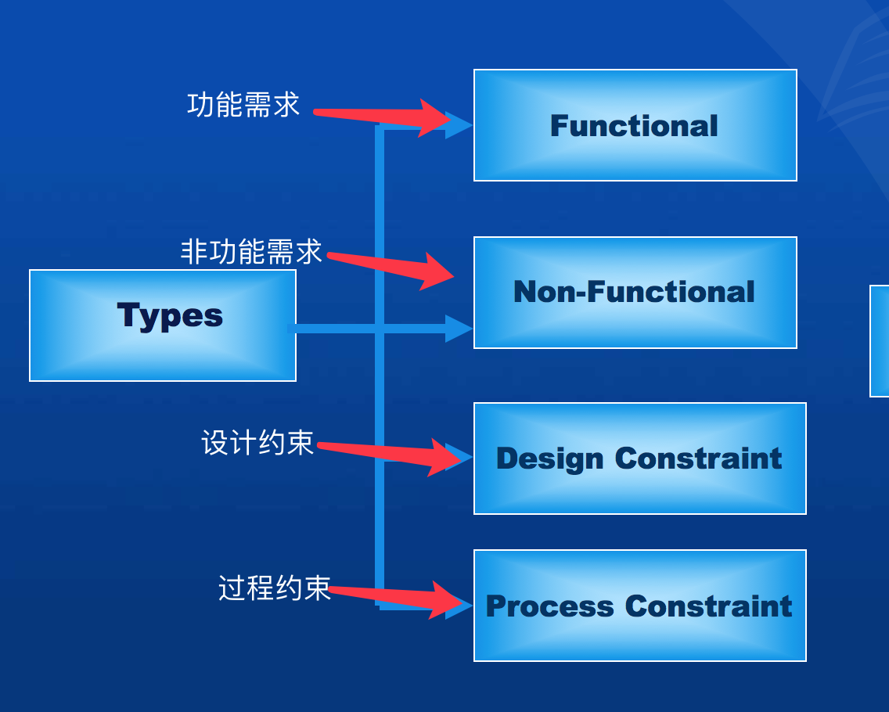
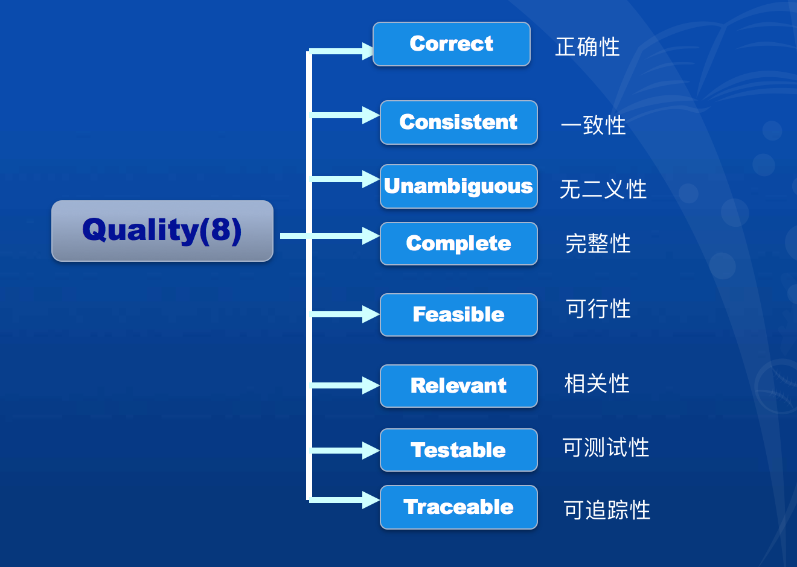
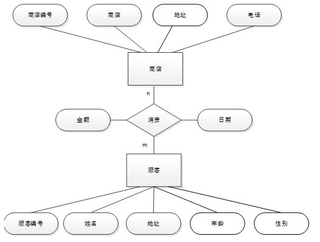

第四章：需求分析
需求的获取方式：

- Elicitation(引出): 收集用户的需求。
- Analysis(分析): 对期望的行为进行理解和建模。
- Specification(规格化): 对需求进行文档化。
- Validation(验证): 检查
定义：
An Expression of desired Behavior.(对期望行为) -----------key words
类型：如图

特征：(需求的特点)

表示方法及应用：
即需要进行需求建模
- Data Modeling(数据建模)
应用：Entity-Relationship Diagram （实体-关系图)


- Function Modeling(功能建模)
应用：Data-Flow Diagrams (数据流图)


DFD（data-flow diagram)还有另一补充：Decision Table(Tree）（决策表或决策树)
- Behavior Modeling(行为建模)
应用: State Machine（状态机)


建模核心思想(敲黑板): Top-Down,Refine by Step （自顶向下，逐步求精)
例图：

需求文档：
大体上可分为两种，区分条件是文档的针对人群:1.用户 2. 开发者
- Requirements Definition Document（需求定义文档) ------------------------ For Customer
- Requirements Specification Document(需求规范文档) -------------------- For Developer
需求验证和确认：
In requirements validation, we check that our requirements definition accurately reflects the customer's needs.
在需求验证,我们检查我们的需求定义为了准确地反映客户的需求。
In verification, we check that one document or artifact conforms to another.
在确认环节，我们会一个一个确认文档或组件
作用：
Verification ensures that we build the system right,
whereas validation ensures that we build the right system.
确认确保我们构建系统,而验证确保我们建立正确的系统。
个人认为Validation是为了验证是否迎合客户的需求，Verfication是为了保证功能能跑起来。